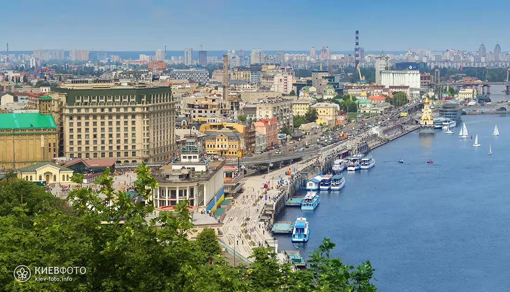

Дата народження: 28.01.2004
місце народження: м.Миколаїв
Освіта:
Середня: Миколаївська ЗОШ №50
Вища: НТУУ "КПІ", м.Київ
Ки́їв — столиця та найбільше місто України. Розташований у середній течії Дніпра, у північній Наддніпрянщині. Політичний, соціально-економічний, транспортний, освітньо-науковий, історичний, культурний та духовний центр України. У системі адміністративно-територіального устрою України Київ має спеціальний статус, визначений Конституцією, і не входить до складу жодної області, хоча і є адміністративним центром Київської області. Місце розташування центральних органів влади України, іноземних місій, штаб-квартир більшості підприємств і громадських об'єднань, що працюють в Україні.
